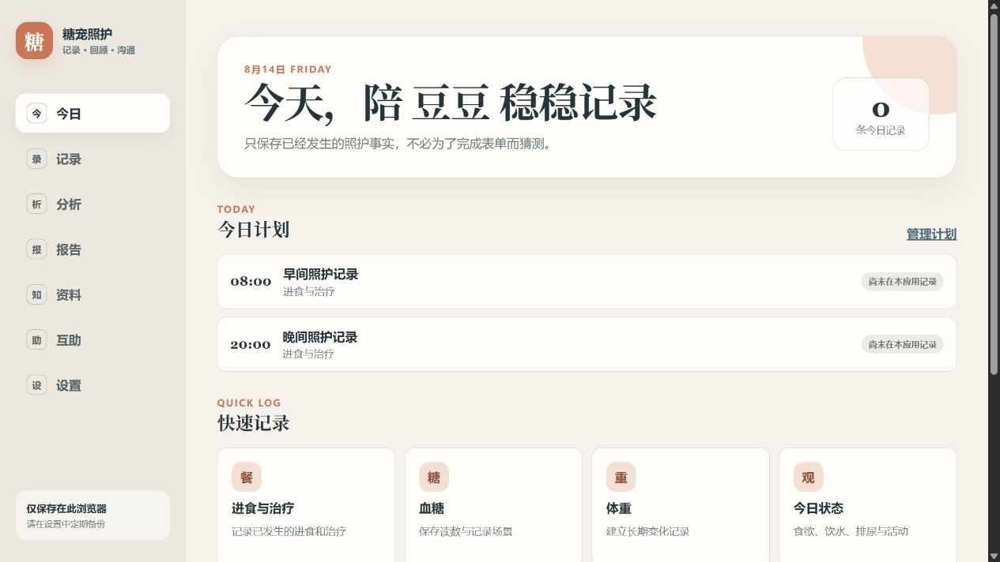

已完成核心功能、测试、截图和 GitHub Pages 构建。

不诊断、不分级、不生成治疗或胰岛素剂量建议。
无账号和后端，记录保存在当前浏览器并支持 JSON 备份恢复。
Product Progress
产品进展
从犬类 Web MVP 推进到犬猫多宠 v0.7 alpha，并为资料审核、社区治理和微信小程序建立可验证原型。
01 犬猫记录闭环
支持犬猫多宠建档与切换，所有计划、记录、趋势、分析和报告按宠物隔离；治疗只记录用户确认已经执行的事实。
02 分析与报告
支持 7/30/90 天记录覆盖、类型/时段分布、字段完整性、单位一致性和按单位描述性统计，并可导出 CSV；复诊报告只呈现原始记录、趋势和用户问题。
03 数据可靠性
使用 Zod schema v0.5、引用与重复 ID 检查和版本化 localStorage。旧版数据先校验再迁移，新旧存储键分离并保留回滚入口。
04 资料与社区原型
资料只有在来源、审核人与复审日期均有效时才可公开；社区新帖默认待审，高风险医学表达先隐藏。两者都不读取本地照护记录。
验证证据
- Vitest：7 个文件、26 个单元测试通过
- Playwright：5 个场景在 375px、768px、1440px 共执行 15 次并通过
- Web 生产依赖审计为 0 漏洞，安全文案扫描、ESLint 和生产构建通过
- Taro 小程序 TypeScript 检查与微信端编译通过
- 小程序依赖仍有安全告警，未进入正式发布
下一阶段
真实用户任务测试目前 0/6，兽医字段审核 0/2。下一步先完成犬猫家长测试与专业审核，再决定猫专属字段、正式资料和社区邀请测试是否进入发布。